nicaea¶
NumerIcal Cosmology And lEnsing cAlculations
Version 2.7 (02/2017)
Web page: http://cosmostat.org/nicaea
Authors:¶
Martin Kilbinger
Karim Benabed
Jean Coupon (HOD, halomodel)
Henry J. McCracken (HOD)
Documentation¶
nicaea is the cosmology part of cosmo_pmc, which can be downloaded for free at http://www.cosmopmc.info. From that site, the cosmo_pmc manual is available for further information about nicaea, which are more detailed than covered in this readme.
Download, compile, and run nicaea¶
Download the code¶
Download the file nicaea_2.7.tgz from http://cosmostat.org/nicaea and un-tar the archive. The packages fftw3 and gsl are required to compile and run nicaea. You can install fftw3 from http://www.fftw.org, and gsl from www.gnu.org/software/gsl.
Compile and install the code¶
Two options to compile nicaea exist. If nicaea is to be used as a library, option 1 is recommended.
Option 1: using cmake, recommended:
cd build
cmake ..
make && make install
The last command will copy the executable demo programs (e.g. lensingdemo) to <BASE>/bin, the library libnicaea.a to <BASE>/lib, and the include files to <BASE>/include/nicaea . The default base directory is <BASE>=nicaea_2.7 .
If the necessary libraries are found on the system, the python module pynicaea is also installed.
The code can be tested with:
ctest -vv
To run the demo programs (see below), go to nicaea_2.7/par_files .
Option 2: using make.:
cd Demo
make
If fftw3 and gsl are not installed in a standard directory (e.g. /usr, /usr/local), set the variables ‘FFTW’ and ‘GSL’ in the Makefile. The header file fftw3.h is looked for in $(FFTW)/include and libfftw3.a in $(FFTW)/lib. The gsl header files are looked for in $(GSL)/include, the libraries libgsl.a and libgslcblas.a in $(GSL)/lib.
Various demo programs can be run in ./Demo, see below.
Run the demo programs¶
The demo programs need parameter files in the working directory, which can be found in par_files.
| Program name | Category | Functionality |
|---|---|---|
| lensingdemo | Weak lensing | density- and lensing power spectrum, lensing second-order functions |
| sn1demo | SNIa | Luminosity distance, distance module |
| halomodeldemo | Halo model | Power spectrum |
| cmb_bao_demo | CMB, BAO | geometrical quantities, e.g. sound horizon, angular diameter distance |
| decomp_eb_demo | Weak lensing | E-/B-mode decomposition (generaalized ring statistic) |
| cosebi_demo | Weak lensing | E-/B-mode decomposition (COSEBIs) |
| third_order_demo | Weak lensing | Third-order aperture-mass moments |
Main functions¶
The main functions listed below have as some of their parameters:
model: cosmo_lens* structure (see Sect. 4)
Lensing and cosmological paramaters and pre-computed tables
theta, THETA_MIN, THETA_MAX, Psimin, Psimax: double
Angular scale [rad]
R: double[3]
Array of angular scale tripes
i_bin, j_bin, k_bin: int
Redshift bin indices
err: error* (see Sect. 4)
Error structure
n: integer
COSEBIs mode.
path: string
Path to COSEBIs files with zeros for given Psimin and Psimax. Default
is */path/to/nicaea/par_files/COSEBIs/*.
B_cosebi: double*
On output, B_mode is written to this pointer if non zero.
aa: array of doubles
Pre-calculated array of coefficients, see decomp_eb.c.
N: integer
Polynomial order, default 6
poly: poly_t enumeration type
Polyonmial type, default *cheby2*
wfilter: filter_t enumeration
Aperture-mass filter type, see lensing_3rd.h, default *fgauss*.
a: double
Scale factor, max(0.01,1/(1+zmax))<=a<1.0
k: double
3d Fourier wave-mode in h/Mpc
s: double
2d Fourier wave-mode, 1e-2<=ell<=1e6
ell: integer
2D harmonic mode, ell>=2
The value of the corresponding two- and three-point function is returned as double.
Second-order shear statistics¶
The following functions are not defined if sprojection==full.
Two-point correlation function xi+ (pm=0) and xi- (pm=1) at angular scale theta [rad]:
xi(model, pm, theta, i_bin, j_bin, err)
Top-hat shear variance in a circle of radius theta [rad]:
gamma2(model, theta, i_bin, j_bin, err)
Aperture-mass variance, polynomial filter:
map2_poly(model, theta, i_bin, j_bin, err)
Aperture-mass variance, Gaussian filter:
map2_gauss(model, theta, i_bin, j_bin, err)
COSEBIs (Complete Orthogonal E-/B-mode Integrals), [14]:
E_cosebi(model, n, Psimin, Psimax, i_bin, j_bin, path, B_cosebi, err)
‘Ring’ statistics, with Chebyshev-filter function decomposition, see [6]:
RR(model, THETA_MIN, THETA_MAX, aa, N, poly, pm, err)
Third-order shear statistics¶
Third-order aperture-mass generalized moment, [4]:
map3(model, R, i_bin, i_bin, k_bin, wfilter, err)
Power spectra¶
3d power spectrum of delta:
P_NL(model, a, k, err)
2d shear power spectrum: Pshear or Pshear+Pg^(1) if reduced-shear correction is switched on with key “sreduced = K10” in cosmo_lens.par parameter file. Returns error if sprojection==full:
Pshear(model, s, i_bin, j_bin, err)
2d shear power spectrum Pshear for integer ell. Computes full spherical projection for sprojection==full (Kilbinger et al. 2017). Calls Pshear for other cases of sprojection:
Pshear_spherical(model, ell, i_bin, j_bin, err)
2d reduced-shear correction power spectrum Pg^(1), see Kilbinger (2010). The totel (reduced-shear) power spectrum is Pkappa + Pg1:
Pg1(model, s, i_bin, j_bin, err)
Ranges¶
The range for k is unlimited except for the coyote10 and coyote13 non-linear emulators. For k<3.3e-6 h/Mpc and k>333 h/Mpc, the power spectrum is extrapolated (see below). The limits can be changed in cosmo.h.
The reduced-shear correction fits are accurate to 2% beetween ell=0.1 and 2*10^5. Outside that range, Pg^(1) return zero.
The range for theta is very, very large, it is determined in the routine xi_via_hankel. Although the Hankel transform is accurate only on a much smaller interval, the range of acceptable results is still from sub-arcseconds to a couple of degrees.
The limited range of the reduced-shear correction reflects in a smaller valid angular range of xi+ and xi-. If the reduced-shear is switched on, the ranges within which the second-order functions are affected to small fractions of a percent are:
| Function | Minimum scale | Maximum scale |
|---|---|---|
| xi+ | 0.1’ | 1000’ |
| xi- | 0.5’ | 1000’ |
| mapsqr | 0.2’ | 1000’ |
| gammasqr | 0.1’ | 1000’ |
| mapsqr_gauss | 0.1’ | 1000’ |
Cosmology¶
The cosmology is encoded in the structure cosmo. It contains all relevant cosmological and nuisance parameters, and pre-calculated tables and constants. If parameters change, these tables are recomputed once they are needed. All lensing-related variables are contained in the structure cosmo_lens.
Reading parameters from a file¶
The function:
read_cosmological_parameters_lens(&model, F, err)
reads cosmological and lensing parameters from the file F (type FILE*) and initialised the structure cosmo_lens *model. The file ‘cosmo_lens.par’ is an example file. First, it contains a reference to the basic cosmology file ‘cosmo.par’, containing cosmological parameters. Next, redshift information is read from the file ‘nofz.par’. Then, the lensing parameters follow.
Initializing the cosmology¶
The function:
init_parameters_lens(...)
returns a pointer to the structure cosmo_lens with parameters given by the arguments and blank tables. If passed to a function (e.g. one described in Sect.2), the corresponding tables and constants (if required) are filled and calculated. Successive calls to this function will be very fast since only a linear interpolation of the tabulated values is performed.
Changing the cosmology¶
If a different cosmology is required, a new cosmo_lens pointer has to be created, either with:
model_new = init_parameters_lens(...)
as above, or with:
model_new = copy_parameters_lens_only(model, err).
model_new->param1 = ...
model_new->param2 = ...
...
In both cases, all tables and constants are blanked. A call of:
updateFrom_lens(model_new, model, err)
copies tables from model to model_new if corresponding parameters are unchanged and leaves those blank which have to be recalculated if required. This is particularly efficient if only a few or only “fast” parameters change since a small number of (time-consuming) functions will be recalculated. E.g., if only the redshift parameters change, the non-linear power spectra and growth factor need not be recalculated, only the shear statistics, which is very fast due to the Hankel transform.
Parameters and ranges¶
The following parameters are implemented. Within a given range, the program should obtain reasonable results or return an error message (see Sect.4). The program does not check whether a parameter is within its range. The following ranges have been tested some time ago, probably the code will work outside of these ranges as well.
Cosmology¶
| Parameter | Description | Minimum | Maximum |
|---|---|---|---|
| Omega_m | total matter density (baryonic + dark) | 0.1 | 1.5 |
| Omega_de | dark energy density | 0.1 | 1.5 |
| w0_de | dark energy eos parametrization (see below) | -2.0 | -0.5 |
| w1_de | dark energy eos parametrization (see below) | -0.6 | 0.6 |
| h_100 | Hubble parameter H_0 = 100 h_100 km/s/Mpc | 0.4 | 1.0 |
| Omega_b | baryon density | 0.02 | 0.06 |
| Omega_nu_mass | massive neutrino density | (not tested) | |
| N_eff_mass | Number of massive neutrinos | (not tested) | |
| sigma_8 | Late-time power spectrum normalisation | 0.1 | 1.5 |
| A_s | CMB power spectrum normalization | (not tested) | |
| n_spec | primordial spectral index | 0.7 | 1.3 |
The power spectrum normalisation can be chosen with the flag normmode = 0 for sigma_8 and 1 for A_s.
Redshift parameters¶
The number of redshift bins is Nzbin. For each bin n_bin, the number of redshift parameters is given by Nnz[n_bin], its base type by nofz[n_bin]. The photometric redshift error type is photz[n_bin]. The sub-array par_nz[n_bin*Nn_max .. n_bin*Nnz_max+Nnz[n_bin]] contains the Nnz[n_bin] redshift parameters of bin n_bin. For all types the first two parameters define the minimum and maximum redshift: par_nz[n_bin*Nn_max] = zmin par_nz[n_bin*Nn_max+1] = zmax. The number of parameters is the sum of base type Nnz_base and photometric redshift error type parameters Nnz_photz.
The number of galaxies at redshift z from bin i is given by
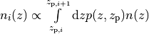
and the distribution for each bin is normalized to unity.
The following base types exist:
| nofz | Nnz_base | parameters | symbols | n(z) (for zmin<z<zmax) |
|---|---|---|---|---|
| ludo | 5 | alpha_p, beta_p, z0 | 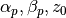 | 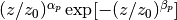 |
| jonben | 5 | a, b, c | 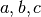 | 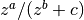 |
| ymmk | 5 | a, b, c | 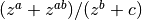 | |
| cfhtlens | 7 | z1, z2, ac, b, d | 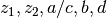 | 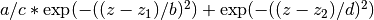 |
| single | 2 | z0 | 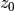 | 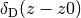 |
| hist | 2n+1 | zi, Ni | 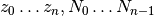 | Histogram with n bins of values  and corners and corners
 |
type=hist assumes a N(z) histogram with n bins.
The following photometric redshift error types exist:
| photz | Nnz_photz | parameters | symbols | p(z, z_p) |
|---|---|---|---|---|
| photz_no | 0 | 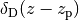 | ||
| photz_gauss | 7 | sigma_z, z_bias, c_cal, f_out, sigma_z_out, z_bias_out, c_cal_out | 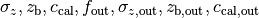 | 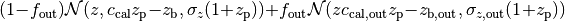 |
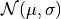 is a Gaussian with mean 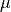 and variance  .
.
The parameters are stored in the vector par_nz as follows:
| 0 | 1 | 2 | 3 | ... | n | n+1 | n+2 | ... | 2n |
| 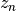 | 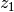 | 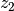 | ... | 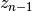 |  |
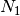 | ... | 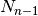 |
The number of parameters is 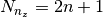. The redshifts
are understood as the lower bin boundaries with the exception of
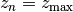 which is the limiting redshift. The i-th bin
therefore is between and 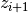, the (unnormalized) number
of galaxies is . 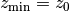 and 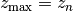 are in the first two entries, as required.
A general nofz file (except hist and single, see below) has a one-line header with the base type nofz, and optional the photometric redshift error type photz. This is followed by Nnz_base lines with the nofz parameter values, one in each line, followed by the Nnz_photz parameters if any:
| # nofz [photz] |
|---|
| p_0 |
| p_1 |
| ... |
| [p_{Nnz_base-1} |
| q_0 |
| ... |
| q_{Nnz_photz-1}] |
For the nofz types hist and single, photometric redshift errors cannot be defined.
nofz=hist¶
The function read_par_nz_hist reads the histogram data from a file, sets Nnz and returns par_nz. The file has to have the following structure:
| # hist | |
|
|
| ... | ... |
| 0.0 |
The last redshift value is the right corner of the highest redshift bin, and the corresponding number of galaxies if necessarily 0.
nofz=single¶
All galaxies are at a single redshift z0 can achieved with the following file:
| # single |
| z0 |
| z0 |
(The value z0 has to appear twice. It is both zmin and zmax.)
The normalization for all types, int_zmin^zmax prob(z) dz = 1, is calculated in the code.
Flags¶
| key | value | reference |
|---|---|---|
| nonlinear | linear | Linear power spectrum ([1] CDM transfer function) |
| pd96 | [3] fitting formula | |
| smith03 | Smith et al. (2003) halofit, [15] | |
| smith03_de | Smith et al. (2003) halofit + dark-energy correction from icosmo.org | |
| smith03_revised | Takahashi et al. (2012), revised halofit parameters, [16] | |
| coyote10 | Coyote emulator v1, [9], [7], [12] | |
| coyote13 | Coyote emulator v2, [8] | |
| transfer | bbks | Bardeen et al. (1986) transfer function, [1] |
| eisenhu | Eisenstein & Hu (1998) “shape fit”, [5] | |
| camb | Using camb for T(k) (not yet supported) | |
| growth | heath | Heath (1977) analytical expression for linear growth factor (valid only for no or a pure cosmological constant, i.e. w0_de=-1, w1_de=0) |
| growth_de | General dark energy model | |
| de_param | jassal | 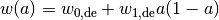 |
| linder | 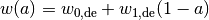 | |
| earlyDE | 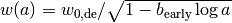 | |
| normmode | 0 | normalization = 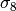 |
| 1 | normalization = 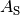 | |
| tomo | tomo_all | All redshift-correlations (ij), i<=j |
| tomo_auto_only | Only autos-correlations (ii) | |
| tomo_cross_only | Only cross-correlations (i!=j) | |
| sprojection | limber | Standard 1st-order flat-sky Limber approximation, L1Fl |
| limber_la08 | Depreciated: Extended 1st-order flat-sky Limber, ExtL1Fl, [13] | |
| limber_la08_hyb | Extended 1st-order flat-sky hybrid Limber, ExtL1FlHyb | |
| limber_la08_sph | Extended 1st-order spherical Limber, best 1st-order approx., ExtL1Sph | |
| limber2_la08 | Depreciated: Extended 2nd-order flat-sky Limber, ExtL2Fl | |
| limber2_la08_hyb | Extended 2nd-order flat-sky Limber hybrid, ExtL2FlHyb | |
| limber2_la08_sph | Extended 2nd-order spherical Limber, best approx., ExtL2Sph, [2] | |
| full | Full spherical projection, slow, not for real-space functions | |
| reduced | none | No reduced-shear correction |
| K10 | Reduced-shear according to [11] | |
| q_mag_size | double | If reduced==K10: q_mag_size = 2*(alpha+beta-1), see K10 eq. 16. Set q_mag_size = 0 if no magnification/size bias correction to be added (reduced-shear only). |
| sia | none | No intrinsic alignment (IA) |
| HS04 | Hirata & Seljak linear IA model, [10] | |
| sia_terns | none | No IA |
| GI_II | If sia!=none: add GI and II (standard IA) | |
| only_GI | If sia!=none: only add GI | |
| only_II | If sia!=none: only add II | |
| A_ia | double | If sia!=none: Global amplitude of IA contribution. |
The range for w0_de and w1_de correspond to de_param=linder.
The minimum scale factor a_min (used for various integrations) is set using the function set_amin().
Errors and diagnostics¶
Most of the situations where an error or undefined value occurs are intercepted by the program. In that case, a variable *err of type error* is set via the macros:
*err = addError(error_type, "message", *err, __LINE__)
or:
*err = addErrorVA(error_type, "formatted message", *err, __LINE__, VA_LIST)
storing the line in the code, a message and the error type (ce_xyz). With:
testErrorRet(test, error_type, "message", *err, __LINE__, return_value)
or:
testErrorRetVA(test, error_type, "formatted message", *err, __LINE__, return_value, VA_LIST)
a conditional error is produced if the (Boolean) expression test is true. The error can be transported up the stack to the calling function with the macro:
forwardError(*err, __LINE__, return_value)
(in case of a void function omit return_value but keep the comma before the closing bracket). This can be used as diagnostics even for errors deep in the hierarchy of functions. To exit on an error, use:
exitOnError(*err, FILE)
At the start of the program, or after an error had occurred but one wishes to continue, maybe with a different cosmology, set:
*err = NULL
An error can be caused by undefined values, not initialized parameters, function arguments outside the valid range. Further, a specific cosmology may not allow certain functions to be carried out. For example, in a loitering Universe there is a maximum redshift, and if the redshift distribution extends over this maximum, the angular diameter distance is undefined and an error is produced.
Extrapolation¶
In the highly non-linear regime, the power spectrum is extrapolated. For the linear power spectrum, 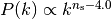 is assumed. In the PD96-case, the stable clustering result 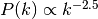 is used. For halofit, the asymptotic form of the halofit formula is taken, see Rob’s paper eq. (61).
In the linear regime at small k, the extrapolation is 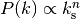.
Performance¶
Time-consuming functions store tabulated values and interpolated when called after the first time. The tables are recalculated when cosmological parameters have changed since the previous call. The correlation functions are calculated using a fast Hankel transform.
Known bugs and shortcomings¶
- Some parameter combinations cause undefined behaviour of the program. These are (hopefully) intercepted and an error is created (see Sect. 5). E.g., for n_spec<0.7, f_NL (Peacock&Dodds) is not defined. For a closed Universe, the probed redshift can be larger than the maximum redshift.
- a=1.0 very rarely creates an error, use 0.99999... instead.
- The code is not well suited for Fisher matrix calculations. In particular for the inverse Fisher matrix, numerical derivatives have to be very accurate, and the interpolations between tabulated values (linear and spline) in nicaea introduce numerical noise that can render the Fisher matrix numerically singular (Wolz et al. 2012).
- Dark-energy models, in particular with varying w(z), are not recommended for the non_linear models smith03, and smith03_de. Instead, use the revised halofit model with smith03_revised.
In case of problems please don’t hesitate to contact me at martin.kilbinger@cea.fr . Questions and comments are welcome!
Changes compared to the Rob Smith’s original halofit¶
Parts of the program ‘cosmo.c’ is based on Rob Smiths’ halofit (Smith et al. 2003). The code for determining the non-linear power spectrum has been improved and made more efficient. The main changes are listed below. The code also includes the non-linear fitting formulae of Peacock & Dodds (1996).
- Tabulation of the linear and non-linear power spectrum, constants are calculated only once.
- Integration cutoff for determination of non-linear scale knl flexible, as function of smoothing scale rmid; using Romberg integration.
- Bisection to find knl is iterative: if the bisection gets stuck at one end of the bisecting interval, the interval is shifted accordingly and a new bisection is started. If knl is larger than knlstern (I chose 10^6 h/Mpc), the bisection is canceled and the linear power spectrum is used.
- Slope and curvature are calculated only once, after knl is fixed.
- The Eisenstein&Hu (1998) fit for the transfer function is used instead of Bond&Efstathiou (1984).
- The exact linear growth factor is used instead of the CPT92 fitting formula. Dark energy models are incorporated.
Acknowledgements¶
We thank Alexandre Boucaud, Jan Hartlap, Alina Kiessling, Jasmin Pielorz, Peter Schneider, Rob E. Smith, Patrick Simon, Masahiro Takada, and Melody Wolk for helpful suggestions.
References¶
| [1] | (1, 2) J. M. Bardeen, J. R. Bond, N. Kaiser, and A. S. Szalay. The statistics of peaks of gaussian random fields. \apj , 304:15–61, 1986. |
| [2] | M. Kilbinger and others. Precision calculations of the cosmic shear power spectrum. submitted to \mnras , 2017. arXiv:arXiv:XXXX.XXXX. |
| [3] | J. A. Peacock and S. J. Dodds. Nonlinear evolution of cosmological power spectra. \mnras , 280:L19, 1996. |
| [4] | P. Schneider, M. Kilbinger, and M. Lombardi. The three-point correlation function of cosmic shear. II: relation to the bispectrum of the projected mass density and generalized third-order aperture mass. \aap , 431:9–25, 2005. arXiv:astro-ph/0308328. |
| [5] | D. J. Eisenstein and W. Hu. Baryonic Features in the Matter Transfer Function. \apj , 496:605, March 1998. ads link. |
| [6] | L. Fu and M. Kilbinger. A new cosmic shear function: Optimised E-/B-mode decomposition on a finite interval. \mnras , 401:1264–1274, 2010. ads link. |
| [7] | K. Heitmann, D. Higdon, M. White, S. Habib, B. J. Williams, E. Lawrence, and C. Wagner. The Coyote Universe. II. Cosmological Models and Precision Emulation of the Nonlinear Matter Power Spectrum. \apj , 705:156–174, November 2009. ads link, arXiv:0902.0429, doi:10.1088/0004-637X/705/1/156. |
| [8] | K. Heitmann, E. Lawrence, J. Kwan, S. Habib, and D. Higdon. The Coyote Universe Extended: Precision Emulation of the Matter Power Spectrum. \apj , 780:111, January 2014. ads link, arXiv:1304.7849, doi:10.1088/0004-637X/780/1/111. |
| [9] | K. Heitmann, M. White, C. Wagner, S. Habib, and D. Higdon. The Coyote Universe. I. Precision Determination of the Nonlinear Matter Power Spectrum. \apj , 715:104–121, 2010. ads link, arXiv:0812.1052, doi:10.1088/0004-637X/715/1/104. |
| [10] | C. M. Hirata and U. Seljak. Intrinsic alignment-lensing interference as a contaminant of cosmic shear. \prd , 70(6):063526–+, September 2004. ads link. |
| [11] | M. Kilbinger. Fitting formulae of the reduced-shear power spectrum for weak lensing. \aap , 519:A19+, 2010. ads link, arXiv:1004.3493, doi:10.1051/0004-6361/201014829. |
| [12] | E. Lawrence, K. Heitmann, M. White, D. Higdon, C. Wagner, S. Habib, and B. Williams. The Coyote Universe. III. Simulation Suite and Precision Emulator for the Nonlinear Matter Power Spectrum. \apj , 713:1322–1331, April 2010. ads link, arXiv:0912.4490, doi:10.1088/0004-637X/713/2/1322. |
| [13] | M. LoVerde and N. Afshordi. Extended Limber approximation. \prd , 78(12):123506, December 2008. ads link, arXiv:0809.5112, doi:10.1103/PhysRevD.78.123506. |
| [14] | P. Schneider, T. Eifler, and E. Krause. COSEBIs: Extracting the full E-/B-mode information from cosmic shear correlation functions. \aap , 520:A116, September 2010. ads link, arXiv:1002.2136, doi:10.1051/0004-6361/201014235. |
| [15] | R. E. Smith, J. A. Peacock, A. Jenkins, S. D. M. White, C. S. Frenk, F. R. Pearce, P. A. Thomas, G. Efstathiou, and H. M. P. Couchman. Stable clustering, the halo model and non-linear cosmological power spectra. \mnras , 341:1311–1332, June 2003. ads link. |
| [16] | R. Takahashi, M. Sato, T. Nishimichi, A. Taruya, and M. Oguri. Revising the Halofit Model for the Nonlinear Matter Power Spectrum. \apj , 761:152, December 2012. ads link, arXiv:1208.2701, doi:10.1088/0004-637X/761/2/152. |